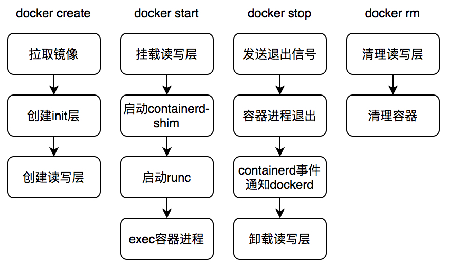

背景
近期，弹性云线上集群发生了几起特殊的容器漂移失败事件，其特殊之处在于容器处于Pod Terminating状态，而宿主则处于Ready状态。
宿主状态为Ready说明其能够正常处理Pod事件，但是Pod却卡在了退出阶段，说明此问题并非由kubelet引起，那么docker就是1号犯罪嫌疑人了。
下文将详细介绍问题的排查与分析全过程。
抽丝剥茧
排除kubelet嫌疑
Pod状态如下：
1 | [stupig@master ~]$ kubectl get pod -owide |
尽管kubelet的犯罪嫌疑已经很小，但是我们还是需要排查kubelet日志进一步确认。截取kubelet关键日志片段如下：
1 | I1014 10:56:46.492682 34976 kubelet_pods.go:1017] Pod "pod-976a0-5_default(f1e03a3d-0dc7-11eb-b4b1-246e967c4efc)" is terminated, but some containers have not been cleaned up: {ID:{Type:docker ID:41020461ed4d801afa8d10847a16907e65f6e8ca34d1704edf15b0d0e72bf4ef} Name:stupig State:exited CreatedAt:2020-10-14 10:49:57.859913657 +0800 CST StartedAt:2020-10-14 10:49:57.928654495 +0800 CST FinishedAt:2020-10-14 10:50:28.661263065 +0800 CST ExitCode:0 Hash:2101852810 HashWithoutResources:2673273670 RestartCount:0 Reason:Completed Message: Resources:map[CpuQuota:200000 Memory:2147483648 MemorySwap:2147483648]} |
日志显示kubelet处于Pod Terminating状态的原因很清楚：清理容器失败。
kubelet清理容器的命令是 docker rm -f ，其失败的原因在于删除容器目录 xxx/merged 时报错，错误提示为 device or resource busy 。
除此之外，kubelet无法再提供其他关键信息。
登陆宿主，我们验证对应容器的状态：
1 | [stupig@hostname ~]$ sudo docker ps -a | grep pod-976a0-5 |
问题已然清楚，现在我们有两种排查思路：
- 参考Google上解决
device or resource busy问题的思路 - 结合现象分析代码
Google大法
有问题找Google！所以，我们首先咨询了Google，检索结果显示很多人都碰到了类似的问题。
而网络上主流的解决方案：配置docker服务MountFlags为slave，避免docker挂载点信息泄漏到其他mnt命名空间，详细原因请参阅：docker device busy问题解决方案。
这么简单？？？显然不能，检查发现docker服务当前已配置MountFlags为slave。网络银弹再次失去功效。
so，我们还是老老实实结合现场分析代码吧。
docker处理流程
在具体分析docker代码之前，先简单介绍下docker的处理流程，避免作为一只无头苍蝇处处碰壁。

清楚了docker的处理流程之后，我们再来分析现场。
提审docker
问题发生在docker清理阶段，docker清理容器读写层出错，报错信息为 device or resource busy，说明docker读写层并没有被正确卸载，或者是没有完全卸载。下面的命令可以验证这个结论：
1 | [stupig@hostname ~]$ grep -rwn '/home/docker_rt/overlay2/e5dab77be213d9f9cfc0b0b3281dbef9c2878fee3b8e406bc8ab97adc30ae4d5/merged' /proc/*/mountinfo |
不出所料，容器读写层仍然被以上四个进程所挂载，进而导致docker在清理读写层目录时报错。
随之而来的问题是，为什么docker没有正确卸载容器读写层？我们先展示下 docker stop 中卸载容器读写层挂载的相关部分代码：
1 | func (daemon *Daemon) Cleanup(container *container.Container) { |
代码处理流程清晰明了，最终docker会发起 SYS_UMOUNT2 系统调用卸载容器读写层。
但是，docker在清理容器读写层时却提示错误，并且容器读写层挂载信息也出现在其他进程中。难不成docker没有执行卸载操作？结合docker日志分析：
1 | Oct 14 10:50:28 hostname dockerd: time="2020-10-14T10:50:28.769199725+08:00" level=debug msg="Failed to unmount e5dab77be213d9f9cfc0b0b3281dbef9c2878fee3b8e406bc8ab97adc30ae4d5 overlay: /home/docker_rt/overlay2/e5dab77be213d9f9cfc0b0b3281dbef9c2878fee3b8e406bc8ab97adc30ae4d5/merged - invalid argument" storage-driver=overlay2 |
日志显示docker在执行卸载容器读写层命令时出错，提示 invalid argument。结合 umount2 文档可知，容器读写层并非是dockerd（docker后台进程）的挂载点？？？
现在，回过头来分析拥有容器读写层挂载信息的进程，我们发现一个惊人的信息：
1 | [stupig@hostname ~]$ ps -ef|grep -E "22283|22407|28454|28530" |
容器读写层挂载信息没有出现在dockerd进程命名空间中，却出现在其他容器的托管服务shim进程的命名空间内，推断dockerd进程发生了重启，对比进程启动时间与命名空间详情可以进行验证：
1 | [stupig@hostname ~]$ ps -eo pid,cmd,lstart|grep dockerd |
结果验证了我们推断的正确性。现在再补充下docker组件的进程树模型，用以解释这个现象，模型如下：
1 | +-------------+ |
dockerd进程启动时，会自动拉起containerd进程；当用户创建并启动容器时，containerd会启动containerd-shim进程用于托管容器进程，最终由containerd-shim调用runc启动容器进程。runc负责初始化进程命名空间，并exec容器启动命令。
上述模型中shim进程存在的意义是：允许dockerd/containerd升级或重启，同时不影响已运行容器。docker提供了 live-restore 的能力，而我们的集群也的确启用了该配置。
此外，由于我们在systemd的docker配置选项中配置了 MountFlags=slave，参考systemd配置说明，systemd在启动dockerd进程时，会创建一个新的mnt命名空间。
至此，问题已基本定位清楚：
- systemd在启动dockerd服务时，将dockerd安置在一个新的mnt命名空间中
- 用户创建并启动容器时，dockerd会在本mnt命名空间内挂载容器读写层目录，并启动shim进程托管容器进程
- 由于某种原因，dockerd服务发生重启，systemd会将其安置在另一个新的mnt命名空间内
- 用户删除容器时，容器退出时，dockerd在清理容器读写层挂载时报错，因为挂载并非在当前dockerd的mnt命名空间内
后来，我们在docker issue中也发现了官方给出的说明，MountFlags=slave 与 live-restore 确实不能同时使用。
一波又起
还没当我们沉浸在解决问题的喜悦之中，另一个疑问接踵而来。我们线上集群好多宿主同时配置了 MountFlags=slave 和 live-restore=true，为什么问题直到最近才报出来呢？
当我们分析了几起 Pod Terminating 的涉事宿主后，发现它们的一个通性是docker版本为 18.06.3-ce，而我们当前主流的版本仍然是 1.13.1。
难道是新版本中才引入的问题？我们首先在测试环境中对 1.13.1 版本的docker进行了验证，Pod确实没有被阻塞在 Terminating 状态，这是不是说明低版本docker不存在挂载点泄漏的问题呢？
事实并非如此。当我们再次进行验证时，在删除Pod前记录了测试容器的读写层，之后发送删除Pod指令，Pod顺利退出，但此时，我们登录Pod之前所在宿主，发现docker日志中同样也存在如下日志：
1 | Oct 14 22:12:43 hostname2 dockerd: time="2020-10-14T22:12:43.730726978+08:00" level=debug msg="Failed to unmount fb41efa2cfcbfbb8d90bd1d8d77d299e17518829faf52af40f7a1552ec8aa165 overlay: /home/docker_rt/overlay2/fb41efa2cfcbfbb8d90bd1d8d77d299e17518829faf52af40f7a1552ec8aa165/merged - invalid argument" |
同样存在卸载问题的情况下，高低版本的docker却呈现出了不同的结果，这显然是docker的处理逻辑发生了变更，这里我们对比源码能够很快得出结论：
1 | // 1.13.1 版本处理逻辑 |
改动一目了然，官方在清理容器变更中给出了详细的说明。也即在低版本docker中，问题并非不存在，仅仅是被隐藏了，并在高版本中被暴露出来。
问题影响
既然所有版本的docker都存在这个问题，那么其影响是什么呢？
在高版本docker中，其影响是显式的，会引起容器清理失败，进而造成Pod删除失败。
而在低版本docker中，其影响是隐式的，造成挂载点泄漏，进而可能会造成的影响如下：
- inode被打满：由于挂载点泄漏，容器读写层不会被清理，长时间累计可能会造成inode耗尽问题，但是是小概率事件
- 容器ID复用：由于挂载点未被卸载，当docker复用了原来已经退出的容器ID时，在挂载容器init层与读写层时会失败。由于docker生成容器ID是随机的，因此也是小概率事件
解决方案
问题已然明确，如何解决问题成了当务之急。思路有二：
- 治标：对标
1.13.1版本的处理逻辑，修改18.06.3-ce处理代码 - 治本：既然官方也提及
MountFlags=slave与live-restore不能同时使用，那么我们修改两个配置选项之一即可
考虑到 重启docker不重启容器 这样一个强需求的存在，似乎我们唯一的解决方案就是关闭 MountFlags=slave 配置。关闭该配置后，与之而来的疑问如下：
- 能否解决本问题？
- 如网络所传，其他systemd托管服务启用PrivateTmp是否会造成挂载点泄漏？
预知后事如何，且听下回分解！